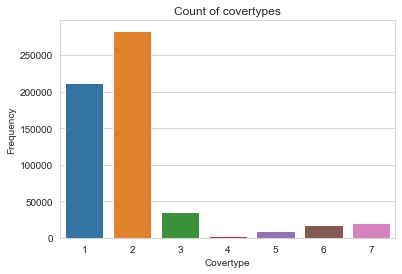
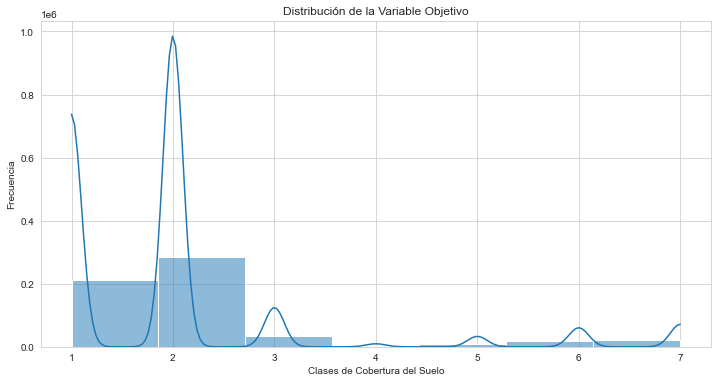
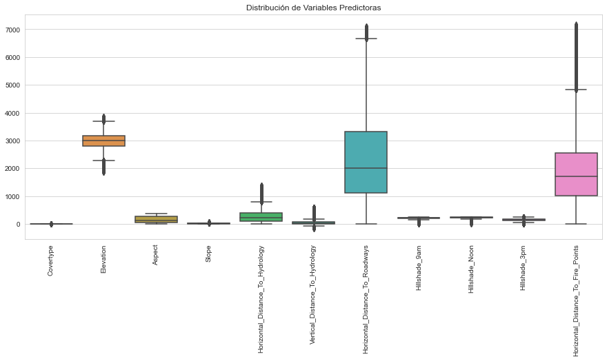
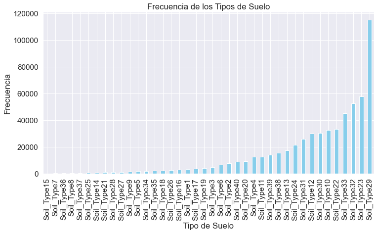
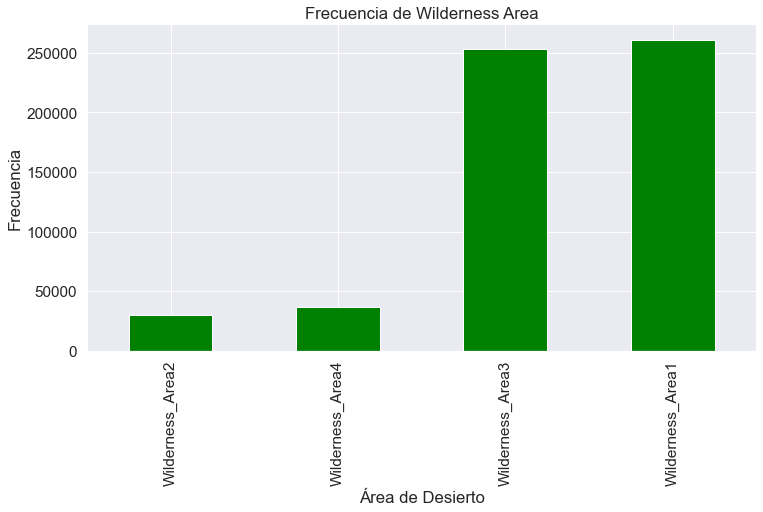

Analisis exploratorio de Datos(EDA)#
Para conseguir los datos lo sacamos de la base de datos de ucirepo, por lo que primero instalamos la libreria para extraerlos
!pip3 install -U ucimlrepo
^C
Collecting ucimlrepo
Using cached ucimlrepo-0.0.7-py3-none-any.whl.metadata (5.5 kB)
Collecting pandas>=1.0.0 (from ucimlrepo)
Downloading pandas-2.2.3-cp312-cp312-win_amd64.whl.metadata (19 kB)
Requirement already satisfied: certifi>=2020.12.5 in d:\miniconda\lib\site-packages (from ucimlrepo) (2025.1.31)
Collecting numpy>=1.26.0 (from pandas>=1.0.0->ucimlrepo)
Downloading numpy-2.2.3-cp312-cp312-win_amd64.whl.metadata (60 kB)
Requirement already satisfied: python-dateutil>=2.8.2 in d:\miniconda\lib\site-packages (from pandas>=1.0.0->ucimlrepo) (2.9.0.post0)
Requirement already satisfied: pytz>=2020.1 in d:\miniconda\lib\site-packages (from pandas>=1.0.0->ucimlrepo) (2025.1)
Collecting tzdata>=2022.7 (from pandas>=1.0.0->ucimlrepo)
Downloading tzdata-2025.1-py2.py3-none-any.whl.metadata (1.4 kB)
Requirement already satisfied: six>=1.5 in d:\miniconda\lib\site-packages (from python-dateutil>=2.8.2->pandas>=1.0.0->ucimlrepo) (1.17.0)
Using cached ucimlrepo-0.0.7-py3-none-any.whl (8.0 kB)
Downloading pandas-2.2.3-cp312-cp312-win_amd64.whl (11.5 MB)
---------------------------------------- 0.0/11.5 MB ? eta -:--:--
----------------------- ---------------- 6.8/11.5 MB 34.9 MB/s eta 0:00:01
------------------------------------ --- 10.5/11.5 MB 26.1 MB/s eta 0:00:01
---------------------------------------- 11.5/11.5 MB 25.7 MB/s eta 0:00:00
Downloading numpy-2.2.3-cp312-cp312-win_amd64.whl (12.6 MB)
---------------------------------------- 0.0/12.6 MB ? eta -:--:--
----------------- ---------------------- 5.5/12.6 MB 25.8 MB/s eta 0:00:01
---------------------------------------- 12.6/12.6 MB 34.4 MB/s eta 0:00:00
Downloading tzdata-2025.1-py2.py3-none-any.whl (346 kB)
Installing collected packages: tzdata, numpy, pandas, ucimlrepo
from ucimlrepo import fetch_ucirepo
covertype = fetch_ucirepo(id=31)
Luego empezamos importamos las librerias a usar en el EDA
import pandas as pd
import numpy as np
import seaborn as sns
import matplotlib.pyplot as plt
from sklearn.preprocessing import StandardScaler
from scipy.stats import pearsonr
# Load data into DataFrame
df = covertype.data.features
df.insert(0, "Covertype", covertype.data.targets)
df.head()
| Covertype | Elevation | Aspect | Slope | Horizontal_Distance_To_Hydrology | Vertical_Distance_To_Hydrology | Horizontal_Distance_To_Roadways | Hillshade_9am | Hillshade_Noon | Hillshade_3pm | ... | Soil_Type34 | Soil_Type35 | Soil_Type36 | Soil_Type37 | Soil_Type38 | Soil_Type39 | Soil_Type40 | Wilderness_Area2 | Wilderness_Area3 | Wilderness_Area4 | |
|---|---|---|---|---|---|---|---|---|---|---|---|---|---|---|---|---|---|---|---|---|---|
| 0 | 5 | 2596 | 51 | 3 | 258 | 0 | 510 | 221 | 232 | 148 | ... | 0 | 0 | 0 | 0 | 0 | 0 | 0 | 0 | 0 | 0 |
| 1 | 5 | 2590 | 56 | 2 | 212 | -6 | 390 | 220 | 235 | 151 | ... | 0 | 0 | 0 | 0 | 0 | 0 | 0 | 0 | 0 | 0 |
| 2 | 2 | 2804 | 139 | 9 | 268 | 65 | 3180 | 234 | 238 | 135 | ... | 0 | 0 | 0 | 0 | 0 | 0 | 0 | 0 | 0 | 0 |
| 3 | 2 | 2785 | 155 | 18 | 242 | 118 | 3090 | 238 | 238 | 122 | ... | 0 | 0 | 0 | 0 | 0 | 0 | 0 | 0 | 0 | 0 |
| 4 | 5 | 2595 | 45 | 2 | 153 | -1 | 391 | 220 | 234 | 150 | ... | 0 | 0 | 0 | 0 | 0 | 0 | 0 | 0 | 0 | 0 |
5 rows × 55 columns
# Escalado de datos para PCA u otros análisis posteriores
scaler = StandardScaler()
df_scaled = pd.DataFrame(scaler.fit_transform(df.iloc[:, :-1]), columns=df.columns[:-1])
df_scaled.info()
df_scaled.head()
df_scaled.describe().T
<class 'pandas.core.frame.DataFrame'>
RangeIndex: 581012 entries, 0 to 581011
Data columns (total 54 columns):
# Column Non-Null Count Dtype
--- ------ -------------- -----
0 Covertype 581012 non-null float64
1 Elevation 581012 non-null float64
2 Aspect 581012 non-null float64
3 Slope 581012 non-null float64
4 Horizontal_Distance_To_Hydrology 581012 non-null float64
5 Vertical_Distance_To_Hydrology 581012 non-null float64
6 Horizontal_Distance_To_Roadways 581012 non-null float64
7 Hillshade_9am 581012 non-null float64
8 Hillshade_Noon 581012 non-null float64
9 Hillshade_3pm 581012 non-null float64
10 Horizontal_Distance_To_Fire_Points 581012 non-null float64
11 Wilderness_Area1 581012 non-null float64
12 Soil_Type1 581012 non-null float64
13 Soil_Type2 581012 non-null float64
14 Soil_Type3 581012 non-null float64
15 Soil_Type4 581012 non-null float64
16 Soil_Type5 581012 non-null float64
17 Soil_Type6 581012 non-null float64
18 Soil_Type7 581012 non-null float64
19 Soil_Type8 581012 non-null float64
20 Soil_Type9 581012 non-null float64
21 Soil_Type10 581012 non-null float64
22 Soil_Type11 581012 non-null float64
23 Soil_Type12 581012 non-null float64
24 Soil_Type13 581012 non-null float64
25 Soil_Type14 581012 non-null float64
26 Soil_Type15 581012 non-null float64
27 Soil_Type16 581012 non-null float64
28 Soil_Type17 581012 non-null float64
29 Soil_Type18 581012 non-null float64
30 Soil_Type19 581012 non-null float64
31 Soil_Type20 581012 non-null float64
32 Soil_Type21 581012 non-null float64
33 Soil_Type22 581012 non-null float64
34 Soil_Type23 581012 non-null float64
35 Soil_Type24 581012 non-null float64
36 Soil_Type25 581012 non-null float64
37 Soil_Type26 581012 non-null float64
38 Soil_Type27 581012 non-null float64
39 Soil_Type28 581012 non-null float64
40 Soil_Type29 581012 non-null float64
41 Soil_Type30 581012 non-null float64
42 Soil_Type31 581012 non-null float64
43 Soil_Type32 581012 non-null float64
44 Soil_Type33 581012 non-null float64
45 Soil_Type34 581012 non-null float64
46 Soil_Type35 581012 non-null float64
47 Soil_Type36 581012 non-null float64
48 Soil_Type37 581012 non-null float64
49 Soil_Type38 581012 non-null float64
50 Soil_Type39 581012 non-null float64
51 Soil_Type40 581012 non-null float64
52 Wilderness_Area2 581012 non-null float64
53 Wilderness_Area3 581012 non-null float64
dtypes: float64(54)
memory usage: 239.4 MB
| count | mean | std | min | 25% | 50% | 75% | max | |
|---|---|---|---|---|---|---|---|---|
| Covertype | 581012.0 | 1.064447e-16 | 1.000001 | -0.752931 | -0.752931 | -0.036857 | -0.036857 | 3.543515 |
| Elevation | 581012.0 | -3.819486e-16 | 1.000001 | -3.930094 | -0.537049 | 0.130845 | 0.727307 | 3.209587 |
| Aspect | 581012.0 | -3.913408e-17 | 1.000001 | -1.390866 | -0.872609 | -0.256062 | 0.932355 | 1.825901 |
| Slope | 581012.0 | 6.417988e-17 | 1.000001 | -1.883448 | -0.681563 | -0.147392 | 0.520322 | 6.930377 |
| Horizontal_Distance_To_Hydrology | 581012.0 | -7.122402e-17 | 1.000001 | -1.267604 | -0.759486 | -0.241959 | 0.539037 | 5.304993 |
| Vertical_Distance_To_Hydrology | 581012.0 | 8.061620e-17 | 1.000001 | -3.763928 | -0.676194 | -0.281650 | 0.387359 | 9.513327 |
| Horizontal_Distance_To_Roadways | 581012.0 | 2.191508e-17 | 1.000001 | -1.507225 | -0.797912 | -0.226484 | 0.627129 | 3.057138 |
| Hillshade_9am | 581012.0 | 5.060036e-16 | 1.000001 | -7.924808 | -0.528432 | 0.218677 | 0.704298 | 1.563473 |
| Hillshade_Noon | 581012.0 | 3.025064e-16 | 1.000001 | -11.296592 | -0.521973 | 0.135633 | 0.692069 | 1.552015 |
| Hillshade_3pm | 581012.0 | -1.385346e-16 | 1.000001 | -3.723844 | -0.614724 | 0.012325 | 0.665502 | 2.912429 |
| Horizontal_Distance_To_Fire_Points | 581012.0 | 1.565363e-17 | 1.000001 | -1.495469 | -0.722168 | -0.204118 | 0.430231 | 3.921411 |
| Wilderness_Area1 | 581012.0 | 2.019318e-16 | 1.000001 | -0.902462 | -0.902462 | -0.902462 | 1.108080 | 1.108080 |
| Soil_Type1 | 581012.0 | 1.037053e-17 | 1.000001 | -0.072416 | -0.072416 | -0.072416 | -0.072416 | 13.809050 |
| Soil_Type2 | 581012.0 | 4.383016e-17 | 1.000001 | -0.114549 | -0.114549 | -0.114549 | -0.114549 | 8.729885 |
| Soil_Type3 | 581012.0 | 1.428394e-17 | 1.000001 | -0.091491 | -0.091491 | -0.091491 | -0.091491 | 10.930093 |
| Soil_Type4 | 581012.0 | -2.504581e-17 | 1.000001 | -0.147649 | -0.147649 | -0.147649 | -0.147649 | 6.772808 |
| Soil_Type5 | 581012.0 | 2.269776e-17 | 1.000001 | -0.052500 | -0.052500 | -0.052500 | -0.052500 | 19.047694 |
| Soil_Type6 | 581012.0 | -6.261452e-17 | 1.000001 | -0.106986 | -0.106986 | -0.106986 | -0.106986 | 9.347023 |
| Soil_Type7 | 581012.0 | 1.584930e-17 | 1.000001 | -0.013444 | -0.013444 | -0.013444 | -0.013444 | 74.380425 |
| Soil_Type8 | 581012.0 | -1.403935e-17 | 1.000001 | -0.017555 | -0.017555 | -0.017555 | -0.017555 | 56.963823 |
| Soil_Type9 | 581012.0 | -4.001459e-17 | 1.000001 | -0.044475 | -0.044475 | -0.044475 | -0.044475 | 22.484423 |
| Soil_Type10 | 581012.0 | 2.191508e-17 | 1.000001 | -0.243947 | -0.243947 | -0.243947 | -0.243947 | 4.099254 |
| Soil_Type11 | 581012.0 | -4.226480e-17 | 1.000001 | -0.147734 | -0.147734 | -0.147734 | -0.147734 | 6.768903 |
| Soil_Type12 | 581012.0 | -1.267944e-16 | 1.000001 | -0.233216 | -0.233216 | -0.233216 | -0.233216 | 4.287867 |
| Soil_Type13 | 581012.0 | -7.826815e-19 | 1.000001 | -0.175866 | -0.175866 | -0.175866 | -0.175866 | 5.686133 |
| Soil_Type14 | 581012.0 | -1.565363e-18 | 1.000001 | -0.032125 | -0.032125 | -0.032125 | -0.032125 | 31.128282 |
| Soil_Type15 | 581012.0 | -6.726169e-19 | 1.000001 | -0.002272 | -0.002272 | -0.002272 | -0.002272 | 440.079160 |
| Soil_Type16 | 581012.0 | -2.974190e-17 | 1.000001 | -0.070148 | -0.070148 | -0.070148 | -0.070148 | 14.255600 |
| Soil_Type17 | 581012.0 | -9.392178e-18 | 1.000001 | -0.076972 | -0.076972 | -0.076972 | -0.076972 | 12.991815 |
| Soil_Type18 | 581012.0 | -1.555580e-17 | 1.000001 | -0.057264 | -0.057264 | -0.057264 | -0.057264 | 17.463013 |
| Soil_Type19 | 581012.0 | 3.169860e-17 | 1.000001 | -0.083480 | -0.083480 | -0.083480 | -0.083480 | 11.978915 |
| Soil_Type20 | 581012.0 | 1.780600e-17 | 1.000001 | -0.127256 | -0.127256 | -0.127256 | -0.127256 | 7.858184 |
| Soil_Type21 | 581012.0 | -3.619902e-18 | 1.000001 | -0.038005 | -0.038005 | -0.038005 | -0.038005 | 26.312198 |
| Soil_Type22 | 581012.0 | 1.447961e-17 | 1.000001 | -0.246860 | -0.246860 | -0.246860 | -0.246860 | 4.050882 |
| Soil_Type23 | 581012.0 | -3.130726e-17 | 1.000001 | -0.332219 | -0.332219 | -0.332219 | -0.332219 | 3.010061 |
| Soil_Type24 | 581012.0 | 3.522067e-17 | 1.000001 | -0.194973 | -0.194973 | -0.194973 | -0.194973 | 5.128914 |
| Soil_Type25 | 581012.0 | -1.604497e-17 | 1.000001 | -0.028574 | -0.028574 | -0.028574 | -0.028574 | 34.996624 |
| Soil_Type26 | 581012.0 | -2.651334e-17 | 1.000001 | -0.066903 | -0.066903 | -0.066903 | -0.066903 | 14.947094 |
| Soil_Type27 | 581012.0 | 4.187346e-17 | 1.000001 | -0.043274 | -0.043274 | -0.043274 | -0.043274 | 23.108480 |
| Soil_Type28 | 581012.0 | -4.793924e-18 | 1.000001 | -0.040384 | -0.040384 | -0.040384 | -0.040384 | 24.762423 |
| Soil_Type29 | 581012.0 | 1.064447e-16 | 1.000001 | -0.497429 | -0.497429 | -0.497429 | -0.497429 | 2.010336 |
| Soil_Type30 | 581012.0 | 3.169860e-17 | 1.000001 | -0.234031 | -0.234031 | -0.234031 | -0.234031 | 4.272931 |
| Soil_Type31 | 581012.0 | 3.600335e-17 | 1.000001 | -0.214980 | -0.214980 | -0.214980 | -0.214980 | 4.651604 |
| Soil_Type32 | 581012.0 | -4.383016e-17 | 1.000001 | -0.315238 | -0.315238 | -0.315238 | -0.315238 | 3.172206 |
| Soil_Type33 | 581012.0 | 1.283598e-16 | 1.000001 | -0.290284 | -0.290284 | -0.290284 | -0.290284 | 3.444901 |
| Soil_Type34 | 581012.0 | 2.436096e-17 | 1.000001 | -0.052730 | -0.052730 | -0.052730 | -0.052730 | 18.964520 |
| Soil_Type35 | 581012.0 | -2.025188e-17 | 1.000001 | -0.057143 | -0.057143 | -0.057143 | -0.057143 | 17.500034 |
| Soil_Type36 | 581012.0 | -5.870111e-19 | 1.000001 | -0.014313 | -0.014313 | -0.014313 | -0.014313 | 69.867401 |
| Soil_Type37 | 581012.0 | -2.152374e-18 | 1.000001 | -0.022653 | -0.022653 | -0.022653 | -0.022653 | 44.144135 |
| Soil_Type38 | 581012.0 | 3.013324e-17 | 1.000001 | -0.165956 | -0.165956 | -0.165956 | -0.165956 | 6.025689 |
| Soil_Type39 | 581012.0 | 5.791843e-17 | 1.000001 | -0.156014 | -0.156014 | -0.156014 | -0.156014 | 6.409682 |
| Soil_Type40 | 581012.0 | 3.326396e-17 | 1.000001 | -0.123654 | -0.123654 | -0.123654 | -0.123654 | 8.087111 |
| Wilderness_Area2 | 581012.0 | 2.629810e-16 | 1.000001 | -0.232859 | -0.232859 | -0.232859 | -0.232859 | 4.294443 |
| Wilderness_Area3 | 581012.0 | 6.887597e-17 | 1.000001 | -0.879364 | -0.879364 | -0.879364 | 1.137185 | 1.137185 |
df.info()
<class 'pandas.core.frame.DataFrame'>
RangeIndex: 581012 entries, 0 to 581011
Data columns (total 55 columns):
# Column Non-Null Count Dtype
--- ------ -------------- -----
0 Covertype 581012 non-null int64
1 Elevation 581012 non-null int64
2 Aspect 581012 non-null int64
3 Slope 581012 non-null int64
4 Horizontal_Distance_To_Hydrology 581012 non-null int64
5 Vertical_Distance_To_Hydrology 581012 non-null int64
6 Horizontal_Distance_To_Roadways 581012 non-null int64
7 Hillshade_9am 581012 non-null int64
8 Hillshade_Noon 581012 non-null int64
9 Hillshade_3pm 581012 non-null int64
10 Horizontal_Distance_To_Fire_Points 581012 non-null int64
11 Wilderness_Area1 581012 non-null int64
12 Soil_Type1 581012 non-null int64
13 Soil_Type2 581012 non-null int64
14 Soil_Type3 581012 non-null int64
15 Soil_Type4 581012 non-null int64
16 Soil_Type5 581012 non-null int64
17 Soil_Type6 581012 non-null int64
18 Soil_Type7 581012 non-null int64
19 Soil_Type8 581012 non-null int64
20 Soil_Type9 581012 non-null int64
21 Soil_Type10 581012 non-null int64
22 Soil_Type11 581012 non-null int64
23 Soil_Type12 581012 non-null int64
24 Soil_Type13 581012 non-null int64
25 Soil_Type14 581012 non-null int64
26 Soil_Type15 581012 non-null int64
27 Soil_Type16 581012 non-null int64
28 Soil_Type17 581012 non-null int64
29 Soil_Type18 581012 non-null int64
30 Soil_Type19 581012 non-null int64
31 Soil_Type20 581012 non-null int64
32 Soil_Type21 581012 non-null int64
33 Soil_Type22 581012 non-null int64
34 Soil_Type23 581012 non-null int64
35 Soil_Type24 581012 non-null int64
36 Soil_Type25 581012 non-null int64
37 Soil_Type26 581012 non-null int64
38 Soil_Type27 581012 non-null int64
39 Soil_Type28 581012 non-null int64
40 Soil_Type29 581012 non-null int64
41 Soil_Type30 581012 non-null int64
42 Soil_Type31 581012 non-null int64
43 Soil_Type32 581012 non-null int64
44 Soil_Type33 581012 non-null int64
45 Soil_Type34 581012 non-null int64
46 Soil_Type35 581012 non-null int64
47 Soil_Type36 581012 non-null int64
48 Soil_Type37 581012 non-null int64
49 Soil_Type38 581012 non-null int64
50 Soil_Type39 581012 non-null int64
51 Soil_Type40 581012 non-null int64
52 Wilderness_Area2 581012 non-null int64
53 Wilderness_Area3 581012 non-null int64
54 Wilderness_Area4 581012 non-null int64
dtypes: int64(55)
memory usage: 243.8 MB
df.describe().T
| count | mean | std | min | 25% | 50% | 75% | max | |
|---|---|---|---|---|---|---|---|---|
| Covertype | 581012.0 | 2.051471 | 1.396504 | 1.0 | 1.0 | 2.0 | 2.0 | 7.0 |
| Elevation | 581012.0 | 2959.365301 | 279.984734 | 1859.0 | 2809.0 | 2996.0 | 3163.0 | 3858.0 |
| Aspect | 581012.0 | 155.656807 | 111.913721 | 0.0 | 58.0 | 127.0 | 260.0 | 360.0 |
| Slope | 581012.0 | 14.103704 | 7.488242 | 0.0 | 9.0 | 13.0 | 18.0 | 66.0 |
| Horizontal_Distance_To_Hydrology | 581012.0 | 269.428217 | 212.549356 | 0.0 | 108.0 | 218.0 | 384.0 | 1397.0 |
| Vertical_Distance_To_Hydrology | 581012.0 | 46.418855 | 58.295232 | -173.0 | 7.0 | 30.0 | 69.0 | 601.0 |
| Horizontal_Distance_To_Roadways | 581012.0 | 2350.146611 | 1559.254870 | 0.0 | 1106.0 | 1997.0 | 3328.0 | 7117.0 |
| Hillshade_9am | 581012.0 | 212.146049 | 26.769889 | 0.0 | 198.0 | 218.0 | 231.0 | 254.0 |
| Hillshade_Noon | 581012.0 | 223.318716 | 19.768697 | 0.0 | 213.0 | 226.0 | 237.0 | 254.0 |
| Hillshade_3pm | 581012.0 | 142.528263 | 38.274529 | 0.0 | 119.0 | 143.0 | 168.0 | 254.0 |
| Horizontal_Distance_To_Fire_Points | 581012.0 | 1980.291226 | 1324.195210 | 0.0 | 1024.0 | 1710.0 | 2550.0 | 7173.0 |
| Wilderness_Area1 | 581012.0 | 0.448865 | 0.497379 | 0.0 | 0.0 | 0.0 | 1.0 | 1.0 |
| Soil_Type1 | 581012.0 | 0.005217 | 0.072039 | 0.0 | 0.0 | 0.0 | 0.0 | 1.0 |
| Soil_Type2 | 581012.0 | 0.012952 | 0.113066 | 0.0 | 0.0 | 0.0 | 0.0 | 1.0 |
| Soil_Type3 | 581012.0 | 0.008301 | 0.090731 | 0.0 | 0.0 | 0.0 | 0.0 | 1.0 |
| Soil_Type4 | 581012.0 | 0.021335 | 0.144499 | 0.0 | 0.0 | 0.0 | 0.0 | 1.0 |
| Soil_Type5 | 581012.0 | 0.002749 | 0.052356 | 0.0 | 0.0 | 0.0 | 0.0 | 1.0 |
| Soil_Type6 | 581012.0 | 0.011316 | 0.105775 | 0.0 | 0.0 | 0.0 | 0.0 | 1.0 |
| Soil_Type7 | 581012.0 | 0.000181 | 0.013442 | 0.0 | 0.0 | 0.0 | 0.0 | 1.0 |
| Soil_Type8 | 581012.0 | 0.000308 | 0.017550 | 0.0 | 0.0 | 0.0 | 0.0 | 1.0 |
| Soil_Type9 | 581012.0 | 0.001974 | 0.044387 | 0.0 | 0.0 | 0.0 | 0.0 | 1.0 |
| Soil_Type10 | 581012.0 | 0.056168 | 0.230245 | 0.0 | 0.0 | 0.0 | 0.0 | 1.0 |
| Soil_Type11 | 581012.0 | 0.021359 | 0.144579 | 0.0 | 0.0 | 0.0 | 0.0 | 1.0 |
| Soil_Type12 | 581012.0 | 0.051584 | 0.221186 | 0.0 | 0.0 | 0.0 | 0.0 | 1.0 |
| Soil_Type13 | 581012.0 | 0.030001 | 0.170590 | 0.0 | 0.0 | 0.0 | 0.0 | 1.0 |
| Soil_Type14 | 581012.0 | 0.001031 | 0.032092 | 0.0 | 0.0 | 0.0 | 0.0 | 1.0 |
| Soil_Type15 | 581012.0 | 0.000005 | 0.002272 | 0.0 | 0.0 | 0.0 | 0.0 | 1.0 |
| Soil_Type16 | 581012.0 | 0.004897 | 0.069804 | 0.0 | 0.0 | 0.0 | 0.0 | 1.0 |
| Soil_Type17 | 581012.0 | 0.005890 | 0.076518 | 0.0 | 0.0 | 0.0 | 0.0 | 1.0 |
| Soil_Type18 | 581012.0 | 0.003268 | 0.057077 | 0.0 | 0.0 | 0.0 | 0.0 | 1.0 |
| Soil_Type19 | 581012.0 | 0.006921 | 0.082902 | 0.0 | 0.0 | 0.0 | 0.0 | 1.0 |
| Soil_Type20 | 581012.0 | 0.015936 | 0.125228 | 0.0 | 0.0 | 0.0 | 0.0 | 1.0 |
| Soil_Type21 | 581012.0 | 0.001442 | 0.037950 | 0.0 | 0.0 | 0.0 | 0.0 | 1.0 |
| Soil_Type22 | 581012.0 | 0.057439 | 0.232681 | 0.0 | 0.0 | 0.0 | 0.0 | 1.0 |
| Soil_Type23 | 581012.0 | 0.099399 | 0.299197 | 0.0 | 0.0 | 0.0 | 0.0 | 1.0 |
| Soil_Type24 | 581012.0 | 0.036622 | 0.187833 | 0.0 | 0.0 | 0.0 | 0.0 | 1.0 |
| Soil_Type25 | 581012.0 | 0.000816 | 0.028551 | 0.0 | 0.0 | 0.0 | 0.0 | 1.0 |
| Soil_Type26 | 581012.0 | 0.004456 | 0.066605 | 0.0 | 0.0 | 0.0 | 0.0 | 1.0 |
| Soil_Type27 | 581012.0 | 0.001869 | 0.043193 | 0.0 | 0.0 | 0.0 | 0.0 | 1.0 |
| Soil_Type28 | 581012.0 | 0.001628 | 0.040318 | 0.0 | 0.0 | 0.0 | 0.0 | 1.0 |
| Soil_Type29 | 581012.0 | 0.198356 | 0.398762 | 0.0 | 0.0 | 0.0 | 0.0 | 1.0 |
| Soil_Type30 | 581012.0 | 0.051927 | 0.221879 | 0.0 | 0.0 | 0.0 | 0.0 | 1.0 |
| Soil_Type31 | 581012.0 | 0.044175 | 0.205483 | 0.0 | 0.0 | 0.0 | 0.0 | 1.0 |
| Soil_Type32 | 581012.0 | 0.090392 | 0.286743 | 0.0 | 0.0 | 0.0 | 0.0 | 1.0 |
| Soil_Type33 | 581012.0 | 0.077716 | 0.267725 | 0.0 | 0.0 | 0.0 | 0.0 | 1.0 |
| Soil_Type34 | 581012.0 | 0.002773 | 0.052584 | 0.0 | 0.0 | 0.0 | 0.0 | 1.0 |
| Soil_Type35 | 581012.0 | 0.003255 | 0.056957 | 0.0 | 0.0 | 0.0 | 0.0 | 1.0 |
| Soil_Type36 | 581012.0 | 0.000205 | 0.014310 | 0.0 | 0.0 | 0.0 | 0.0 | 1.0 |
| Soil_Type37 | 581012.0 | 0.000513 | 0.022641 | 0.0 | 0.0 | 0.0 | 0.0 | 1.0 |
| Soil_Type38 | 581012.0 | 0.026803 | 0.161508 | 0.0 | 0.0 | 0.0 | 0.0 | 1.0 |
| Soil_Type39 | 581012.0 | 0.023762 | 0.152307 | 0.0 | 0.0 | 0.0 | 0.0 | 1.0 |
| Soil_Type40 | 581012.0 | 0.015060 | 0.121791 | 0.0 | 0.0 | 0.0 | 0.0 | 1.0 |
| Wilderness_Area2 | 581012.0 | 0.051434 | 0.220882 | 0.0 | 0.0 | 0.0 | 0.0 | 1.0 |
| Wilderness_Area3 | 581012.0 | 0.436074 | 0.495897 | 0.0 | 0.0 | 0.0 | 1.0 | 1.0 |
| Wilderness_Area4 | 581012.0 | 0.063627 | 0.244087 | 0.0 | 0.0 | 0.0 | 0.0 | 1.0 |
#Frecuencias de los covertypes
df.Covertype.value_counts()
2 283301
1 211840
3 35754
7 20510
6 17367
5 9493
4 2747
Name: Covertype, dtype: int64
#Tabla de frecuencias de los covertypes
sns.set_style("whitegrid")
plt.title('Count of covertypes')
sns.countplot(x=df.Covertype)
plt.xlabel('Covertype')
plt.ylabel('Frequency')
plt.show()

#Visualizacion de las distribuciones
plt.figure(figsize=(12, 6))
sns.histplot(df['Covertype'], bins=df['Covertype'].nunique(), kde=True)
plt.title('Distribución de la Variable Objetivo')
plt.xlabel('Clases de Cobertura del Suelo')
plt.ylabel('Frecuencia')
plt.show()

#Revisamos por datos faltantes
df.isnull().sum()
Covertype 0
Elevation 0
Aspect 0
Slope 0
Horizontal_Distance_To_Hydrology 0
Vertical_Distance_To_Hydrology 0
Horizontal_Distance_To_Roadways 0
Hillshade_9am 0
Hillshade_Noon 0
Hillshade_3pm 0
Horizontal_Distance_To_Fire_Points 0
Wilderness_Area1 0
Soil_Type1 0
Soil_Type2 0
Soil_Type3 0
Soil_Type4 0
Soil_Type5 0
Soil_Type6 0
Soil_Type7 0
Soil_Type8 0
Soil_Type9 0
Soil_Type10 0
Soil_Type11 0
Soil_Type12 0
Soil_Type13 0
Soil_Type14 0
Soil_Type15 0
Soil_Type16 0
Soil_Type17 0
Soil_Type18 0
Soil_Type19 0
Soil_Type20 0
Soil_Type21 0
Soil_Type22 0
Soil_Type23 0
Soil_Type24 0
Soil_Type25 0
Soil_Type26 0
Soil_Type27 0
Soil_Type28 0
Soil_Type29 0
Soil_Type30 0
Soil_Type31 0
Soil_Type32 0
Soil_Type33 0
Soil_Type34 0
Soil_Type35 0
Soil_Type36 0
Soil_Type37 0
Soil_Type38 0
Soil_Type39 0
Soil_Type40 0
Wilderness_Area2 0
Wilderness_Area3 0
Wilderness_Area4 0
dtype: int64
# Boxplot de algunas variables
plt.figure(figsize=(15, 6))
sns.boxplot(data=df.iloc[:, :11]) # Graficamos solo las primeras 11 variables para claridad
plt.xticks(rotation=90)
plt.title('Distribución de Variables Predictoras')
plt.show()

cat_cols= df.select_dtypes(include=['object']).columns
num_cols = df.select_dtypes(include=np.number).columns.tolist()
print("Categorical Variables:")
print(cat_cols)
print("Numerical Variables:")
print(num_cols)
Categorical Variables:
Index([], dtype='object')
Numerical Variables:
['Covertype', 'Elevation', 'Aspect', 'Slope', 'Horizontal_Distance_To_Hydrology', 'Vertical_Distance_To_Hydrology', 'Horizontal_Distance_To_Roadways', 'Hillshade_9am', 'Hillshade_Noon', 'Hillshade_3pm', 'Horizontal_Distance_To_Fire_Points', 'Wilderness_Area1', 'Soil_Type1', 'Soil_Type2', 'Soil_Type3', 'Soil_Type4', 'Soil_Type5', 'Soil_Type6', 'Soil_Type7', 'Soil_Type8', 'Soil_Type9', 'Soil_Type10', 'Soil_Type11', 'Soil_Type12', 'Soil_Type13', 'Soil_Type14', 'Soil_Type15', 'Soil_Type16', 'Soil_Type17', 'Soil_Type18', 'Soil_Type19', 'Soil_Type20', 'Soil_Type21', 'Soil_Type22', 'Soil_Type23', 'Soil_Type24', 'Soil_Type25', 'Soil_Type26', 'Soil_Type27', 'Soil_Type28', 'Soil_Type29', 'Soil_Type30', 'Soil_Type31', 'Soil_Type32', 'Soil_Type33', 'Soil_Type34', 'Soil_Type35', 'Soil_Type36', 'Soil_Type37', 'Soil_Type38', 'Soil_Type39', 'Soil_Type40', 'Wilderness_Area2', 'Wilderness_Area3', 'Wilderness_Area4']
from scipy.stats import kurtosis
num_cols = num_cols[:11]
print(num_cols)
['Covertype', 'Elevation', 'Aspect', 'Slope', 'Horizontal_Distance_To_Hydrology', 'Vertical_Distance_To_Hydrology', 'Horizontal_Distance_To_Roadways', 'Hillshade_9am', 'Hillshade_Noon', 'Hillshade_3pm', 'Horizontal_Distance_To_Fire_Points']
sns.set(font_scale=1.4)
for col in num_cols:
print('Column: ', col)
print('Skew:', round(df[col].skew(), 2))
print('Kurtosis: ', round(df[col].kurtosis(), 2))
plt.figure(figsize = (14, 6))
plt.subplot(1, 2, 1)
df[col].hist(grid=False)
plt.subplot(1, 2, 2)
sns.boxplot(x=df[col])
plt.show()
Column: Covertype
Skew: 2.28
Kurtosis: 4.95
Column: Elevation
Skew: -0.82
Kurtosis: 0.75
Column: Aspect
Skew: 0.4
Kurtosis: -1.22
Column: Slope
Skew: 0.79
Kurtosis: 0.58
Column: Horizontal_Distance_To_Hydrology
Skew: 1.14
Kurtosis: 1.37
Column: Vertical_Distance_To_Hydrology
Skew: 1.79
Kurtosis: 5.25
Column: Horizontal_Distance_To_Roadways
Skew: 0.71
Kurtosis: -0.38
Column: Hillshade_9am
Skew: -1.18
Kurtosis: 1.88
Column: Hillshade_Noon
Skew: -1.06
Kurtosis: 2.07
Column: Hillshade_3pm
Skew: -0.28
Kurtosis: 0.4
Column: Horizontal_Distance_To_Fire_Points
Skew: 1.29
Kurtosis: 1.65
# Diagrama de barras para la frecuencia de variables dummy del tipo de tierra
soil_cols = [col for col in df.columns if "Soil_Type" in col]
soil_counts = df[soil_cols].sum()
plt.figure(figsize=(12, 6))
soil_counts.sort_values().plot(kind='bar', color='skyblue')
plt.title('Frecuencia de los Tipos de Suelo')
plt.xlabel('Tipo de Suelo')
plt.ylabel('Frecuencia')
plt.xticks(rotation=90)
plt.show()

# Diagrama de barras para la frecuencia de Wilderness Area
wilderness_cols = [col for col in df.columns if "Wilderness_Area" in col]
wilderness_counts = df[wilderness_cols].sum()
plt.figure(figsize=(12, 6))
wilderness_counts.sort_values().plot(kind='bar', color='green')
plt.title('Frecuencia de Wilderness Area')
plt.xlabel('Área de Desierto')
plt.ylabel('Frecuencia')
plt.xticks(rotation=90)
plt.show()

# Correlación y multicolinealidad
correlation_matrix = df.corr(method = "spearman")
print(correlation_matrix)
plt.figure(figsize=(12, 8))
sns.heatmap(correlation_matrix, cmap='coolwarm', annot=False)
plt.title('Matriz de Correlación')
plt.show()
Covertype Elevation Aspect Slope \
Covertype 1.000000 -0.491177 0.025320 0.151078
Elevation -0.491177 1.000000 0.044060 -0.160297
Aspect 0.025320 0.044060 1.000000 0.072005
Slope 0.151078 -0.160297 0.072005 1.000000
Horizontal_Distance_To_Hydrology -0.027699 0.287402 0.004692 0.019206
Vertical_Distance_To_Hydrology 0.095683 0.086931 0.073052 0.301333
Horizontal_Distance_To_Roadways -0.221889 0.341590 0.019418 -0.205023
Hillshade_9am 0.012894 0.015100 -0.428957 -0.131244
Hillshade_Noon -0.034298 0.150427 0.421134 -0.434180
Hillshade_3pm -0.036393 0.072750 0.640536 -0.173474
Horizontal_Distance_To_Fire_Points -0.136924 0.154851 -0.112724 -0.169574
Wilderness_Area1 -0.179216 0.065530 -0.125853 -0.239107
Soil_Type1 0.110199 -0.120759 -0.002706 0.087995
Soil_Type2 0.158685 -0.164094 0.004467 -0.014747
Soil_Type3 0.112693 -0.138483 0.012503 0.104642
Soil_Type4 0.171925 -0.183637 0.038996 0.126395
Soil_Type5 0.081248 -0.087596 0.005844 0.059875
Soil_Type6 0.146069 -0.165973 0.007805 0.004774
Soil_Type7 0.005524 -0.006387 -0.005367 -0.017589
Soil_Type8 0.000402 -0.008447 -0.003172 -0.025665
Soil_Type9 0.008192 -0.061774 -0.018787 -0.035118
Soil_Type10 0.268381 -0.341660 0.024747 0.224296
Soil_Type11 0.081331 -0.160778 -0.065414 -0.045583
Soil_Type12 0.061981 -0.178570 -0.061860 -0.183052
Soil_Type13 0.060996 -0.081798 0.068209 0.170950
Soil_Type14 0.052129 -0.052561 0.006273 0.001244
Soil_Type15 0.003874 -0.003885 -0.003123 0.001284
Soil_Type16 0.017321 -0.063689 0.005198 -0.037219
Soil_Type17 0.084046 -0.098322 0.001742 -0.044281
Soil_Type18 0.026303 -0.078015 -0.023580 -0.051501
Soil_Type19 -0.046451 0.031932 -0.003803 -0.092027
Soil_Type20 -0.024333 -0.064283 -0.032534 -0.082629
Soil_Type21 -0.042438 0.017908 0.030690 -0.027807
Soil_Type22 -0.205034 0.182520 0.017369 -0.045783
Soil_Type23 -0.183019 0.122434 0.010760 -0.221212
Soil_Type24 -0.080044 0.045403 -0.006817 0.102807
Soil_Type25 -0.000429 0.035377 0.003903 0.029091
Soil_Type26 0.019793 -0.034783 -0.003344 -0.018268
Soil_Type27 -0.019339 0.040333 0.017010 0.045234
Soil_Type28 0.014246 -0.039423 0.023520 0.049048
Soil_Type29 -0.076952 0.036332 -0.060429 -0.070781
Soil_Type30 0.022313 -0.059581 -0.006874 0.082553
Soil_Type31 -0.065707 0.063449 -0.014191 -0.020258
Soil_Type32 -0.064836 0.171806 0.055275 -0.128248
Soil_Type33 -0.054824 0.054634 0.020225 0.226581
Soil_Type34 0.020488 0.007887 0.015674 -0.008113
Soil_Type35 0.018645 0.089345 -0.018578 -0.021772
Soil_Type36 0.013901 0.022831 0.005328 0.006116
Soil_Type37 0.041415 0.037157 -0.021262 0.009219
Soil_Type38 0.010151 0.248442 0.018464 -0.071544
Soil_Type39 0.009401 0.221847 0.005753 0.091187
Soil_Type40 0.012608 0.200475 -0.008708 0.029296
Wilderness_Area2 -0.112887 0.272947 0.054218 -0.029596
Wilderness_Area3 0.044961 0.019505 0.068860 0.146052
Wilderness_Area4 0.375999 -0.420156 0.067490 0.217286
Horizontal_Distance_To_Hydrology \
Covertype -0.027699
Elevation 0.287402
Aspect 0.004692
Slope 0.019206
Horizontal_Distance_To_Hydrology 1.000000
Vertical_Distance_To_Hydrology 0.619386
Horizontal_Distance_To_Roadways 0.047026
Hillshade_9am -0.041990
Hillshade_Noon 0.028134
Hillshade_3pm 0.037528
Horizontal_Distance_To_Fire_Points 0.073760
Wilderness_Area1 -0.073846
Soil_Type1 -0.034925
Soil_Type2 0.003135
Soil_Type3 -0.039559
Soil_Type4 -0.046022
Soil_Type5 -0.004812
Soil_Type6 0.000106
Soil_Type7 0.008903
Soil_Type8 0.002192
Soil_Type9 -0.020634
Soil_Type10 -0.068574
Soil_Type11 0.007044
Soil_Type12 0.041259
Soil_Type13 -0.001120
Soil_Type14 -0.050361
Soil_Type15 -0.003505
Soil_Type16 -0.084601
Soil_Type17 -0.095185
Soil_Type18 -0.009334
Soil_Type19 -0.054840
Soil_Type20 -0.105326
Soil_Type21 -0.050889
Soil_Type22 -0.040416
Soil_Type23 -0.164505
Soil_Type24 0.016538
Soil_Type25 0.021065
Soil_Type26 0.011963
Soil_Type27 0.027385
Soil_Type28 0.027437
Soil_Type29 0.027491
Soil_Type30 -0.041529
Soil_Type31 0.063610
Soil_Type32 0.139968
Soil_Type33 0.096272
Soil_Type34 0.049311
Soil_Type35 -0.015809
Soil_Type36 0.021320
Soil_Type37 -0.011160
Soil_Type38 0.020584
Soil_Type39 0.040943
Soil_Type40 0.115317
Wilderness_Area2 0.059683
Wilderness_Area3 0.092714
Wilderness_Area4 -0.091895
Vertical_Distance_To_Hydrology \
Covertype 0.095683
Elevation 0.086931
Aspect 0.073052
Slope 0.301333
Horizontal_Distance_To_Hydrology 0.619386
Vertical_Distance_To_Hydrology 1.000000
Horizontal_Distance_To_Roadways -0.037963
Hillshade_9am -0.128754
Hillshade_Noon -0.095524
Hillshade_3pm 0.037780
Horizontal_Distance_To_Fire_Points -0.043495
Wilderness_Area1 -0.173979
Soil_Type1 0.019809
Soil_Type2 0.017532
Soil_Type3 0.014956
Soil_Type4 0.032013
Soil_Type5 0.031556
Soil_Type6 0.054525
Soil_Type7 -0.010190
Soil_Type8 -0.018964
Soil_Type9 -0.036924
Soil_Type10 0.071564
Soil_Type11 -0.010649
Soil_Type12 -0.016645
Soil_Type13 0.078099
Soil_Type14 -0.036913
Soil_Type15 -0.002679
Soil_Type16 -0.074526
Soil_Type17 -0.080751
Soil_Type18 -0.035807
Soil_Type19 -0.076959
Soil_Type20 -0.109479
Soil_Type21 -0.037330
Soil_Type22 -0.071115
Soil_Type23 -0.229627
Soil_Type24 0.046854
Soil_Type25 -0.009630
Soil_Type26 -0.002776
Soil_Type27 0.028145
Soil_Type28 0.041689
Soil_Type29 -0.043013
Soil_Type30 0.002727
Soil_Type31 0.029173
Soil_Type32 0.063340
Soil_Type33 0.157151
Soil_Type34 0.043978
Soil_Type35 -0.024225
Soil_Type36 0.016593
Soil_Type37 -0.010972
Soil_Type38 -0.016032
Soil_Type39 0.054905
Soil_Type40 0.118858
Wilderness_Area2 -0.007712
Wilderness_Area3 0.130844
Wilderness_Area4 0.095669
Horizontal_Distance_To_Roadways \
Covertype -0.221889
Elevation 0.341590
Aspect 0.019418
Slope -0.205023
Horizontal_Distance_To_Hydrology 0.047026
Vertical_Distance_To_Hydrology -0.037963
Horizontal_Distance_To_Roadways 1.000000
Hillshade_9am -0.009994
Hillshade_Noon 0.173793
Hillshade_3pm 0.102471
Horizontal_Distance_To_Fire_Points 0.322301
Wilderness_Area1 0.406230
Soil_Type1 -0.100157
Soil_Type2 -0.094127
Soil_Type3 -0.095832
Soil_Type4 -0.086492
Soil_Type5 -0.074446
Soil_Type6 -0.126615
Soil_Type7 0.018240
Soil_Type8 0.023429
Soil_Type9 -0.054174
Soil_Type10 -0.198085
Soil_Type11 -0.103042
Soil_Type12 0.072592
Soil_Type13 -0.033867
Soil_Type14 -0.039933
Soil_Type15 -0.003806
Soil_Type16 0.011574
Soil_Type17 -0.051013
Soil_Type18 -0.058082
Soil_Type19 0.058571
Soil_Type20 0.052482
Soil_Type21 -0.009765
Soil_Type22 0.017143
Soil_Type23 -0.001952
Soil_Type24 -0.028876
Soil_Type25 -0.042806
Soil_Type26 0.017570
Soil_Type27 0.010384
Soil_Type28 -0.035743
Soil_Type29 0.269814
Soil_Type30 0.054395
Soil_Type31 -0.032015
Soil_Type32 -0.058784
Soil_Type33 -0.058158
Soil_Type34 0.014711
Soil_Type35 0.007195
Soil_Type36 0.011094
Soil_Type37 0.020994
Soil_Type38 0.083109
Soil_Type39 0.056436
Soil_Type40 0.028999
Wilderness_Area2 -0.222173
Wilderness_Area3 -0.152704
Wilderness_Area4 -0.316489
Hillshade_9am Hillshade_Noon \
Covertype 0.012894 -0.034298
Elevation 0.015100 0.150427
Aspect -0.428957 0.421134
Slope -0.131244 -0.434180
Horizontal_Distance_To_Hydrology -0.041990 0.028134
Vertical_Distance_To_Hydrology -0.128754 -0.095524
Horizontal_Distance_To_Roadways -0.009994 0.173793
Hillshade_9am 1.000000 -0.101311
Hillshade_Noon -0.101311 1.000000
Hillshade_3pm -0.823424 0.573942
Horizontal_Distance_To_Fire_Points 0.124450 0.017162
Wilderness_Area1 0.192881 -0.000447
Soil_Type1 0.013953 -0.026452
Soil_Type2 0.037048 0.045871
Soil_Type3 0.048188 0.013383
Soil_Type4 0.032851 0.098102
Soil_Type5 -0.026555 -0.044339
Soil_Type6 -0.010545 -0.012817
Soil_Type7 0.001833 0.005257
Soil_Type8 0.002657 0.010664
Soil_Type9 0.021692 0.001853
Soil_Type10 -0.163118 -0.207154
Soil_Type11 0.043008 -0.033390
Soil_Type12 0.084092 0.047055
Soil_Type13 -0.035317 0.085616
Soil_Type14 -0.010764 -0.000050
Soil_Type15 -0.001190 -0.002717
Soil_Type16 -0.014083 0.013297
Soil_Type17 0.001686 0.029505
Soil_Type18 0.033325 0.011868
Soil_Type19 0.006960 0.039228
Soil_Type20 0.011944 0.006388
Soil_Type21 -0.024294 0.033742
Soil_Type22 -0.014226 0.025841
Soil_Type23 -0.000016 0.115781
Soil_Type24 -0.119058 -0.144112
Soil_Type25 0.039887 0.006131
Soil_Type26 0.024612 0.043781
Soil_Type27 0.015819 0.021634
Soil_Type28 -0.051002 -0.003822
Soil_Type29 0.076634 -0.043737
Soil_Type30 0.126616 -0.019880
Soil_Type31 -0.062500 -0.016349
Soil_Type32 -0.028776 0.125267
Soil_Type33 -0.038293 -0.066841
Soil_Type34 0.001400 0.047899
Soil_Type35 0.028627 0.001785
Soil_Type36 0.008264 0.019026
Soil_Type37 0.009659 -0.022422
Soil_Type38 0.002181 0.039267
Soil_Type39 -0.008643 -0.071507
Soil_Type40 -0.000317 -0.042016
Wilderness_Area2 -0.011384 0.036371
Wilderness_Area3 -0.123113 0.058397
Wilderness_Area4 -0.132614 -0.150644
Hillshade_3pm ... Soil_Type34 \
Covertype -0.036393 ... 0.020488
Elevation 0.072750 ... 0.007887
Aspect 0.640536 ... 0.015674
Slope -0.173474 ... -0.008113
Horizontal_Distance_To_Hydrology 0.037528 ... 0.049311
Vertical_Distance_To_Hydrology 0.037780 ... 0.043978
Horizontal_Distance_To_Roadways 0.102471 ... 0.014711
Hillshade_9am -0.823424 ... 0.001400
Hillshade_Noon 0.573942 ... 0.047899
Hillshade_3pm 1.000000 ... 0.020568
Horizontal_Distance_To_Fire_Points -0.082736 ... -0.040136
Wilderness_Area1 -0.127322 ... -0.047587
Soil_Type1 -0.032022 ... -0.003819
Soil_Type2 -0.007580 ... -0.006040
Soil_Type3 -0.038981 ... -0.004824
Soil_Type4 -0.001831 ... -0.007786
Soil_Type5 -0.006917 ... -0.002768
Soil_Type6 0.002132 ... -0.005641
Soil_Type7 0.002213 ... -0.000709
Soil_Type8 0.004658 ... -0.000926
Soil_Type9 -0.013655 ... -0.002345
Soil_Type10 0.015265 ... -0.012863
Soil_Type11 -0.048788 ... -0.007790
Soil_Type12 -0.030528 ... -0.012297
Soil_Type13 0.056240 ... -0.009273
Soil_Type14 0.009440 ... -0.001694
Soil_Type15 -0.001515 ... -0.000120
Soil_Type16 0.021571 ... -0.003699
Soil_Type17 0.017210 ... -0.004059
Soil_Type18 -0.016994 ... -0.003020
Soil_Type19 0.019860 ... -0.004402
Soil_Type20 -0.001921 ... -0.006710
Soil_Type21 0.037018 ... -0.002004
Soil_Type22 0.026589 ... -0.013017
Soil_Type23 0.069703 ... -0.017518
Soil_Type24 0.016175 ... -0.010281
Soil_Type25 -0.031388 ... -0.001507
Soil_Type26 0.001529 ... -0.003528
Soil_Type27 -0.006349 ... -0.002282
Soil_Type28 0.043953 ... -0.002129
Soil_Type29 -0.070706 ... -0.026229
Soil_Type30 -0.110047 ... -0.012340
Soil_Type31 0.038259 ... -0.011336
Soil_Type32 0.091006 ... -0.016623
Soil_Type33 -0.023009 ... -0.015307
Soil_Type34 0.020568 ... 1.000000
Soil_Type35 -0.020685 ... -0.003013
Soil_Type36 0.001631 ... -0.000755
Soil_Type37 -0.021482 ... -0.001194
Soil_Type38 0.025071 ... -0.008751
Soil_Type39 -0.024616 ... -0.008227
Soil_Type40 -0.019522 ... -0.006520
Wilderness_Area2 0.035609 ... -0.012279
Wilderness_Area3 0.097304 ... 0.059964
Wilderness_Area4 0.029535 ... -0.013745
Soil_Type35 Soil_Type36 Soil_Type37 \
Covertype 0.018645 0.013901 0.041415
Elevation 0.089345 0.022831 0.037157
Aspect -0.018578 0.005328 -0.021262
Slope -0.021772 0.006116 0.009219
Horizontal_Distance_To_Hydrology -0.015809 0.021320 -0.011160
Vertical_Distance_To_Hydrology -0.024225 0.016593 -0.010972
Horizontal_Distance_To_Roadways 0.007195 0.011094 0.020994
Hillshade_9am 0.028627 0.008264 0.009659
Hillshade_Noon 0.001785 0.019026 -0.022422
Hillshade_3pm -0.020685 0.001631 -0.021482
Horizontal_Distance_To_Fire_Points 0.000369 -0.012807 0.011685
Wilderness_Area1 -0.011714 -0.012917 0.015014
Soil_Type1 -0.004138 -0.001036 -0.001640
Soil_Type2 -0.006546 -0.001640 -0.002595
Soil_Type3 -0.005228 -0.001309 -0.002073
Soil_Type4 -0.008437 -0.002113 -0.003345
Soil_Type5 -0.003000 -0.000751 -0.001189
Soil_Type6 -0.006113 -0.001531 -0.002424
Soil_Type7 -0.000768 -0.000192 -0.000305
Soil_Type8 -0.001003 -0.000251 -0.000398
Soil_Type9 -0.002541 -0.000637 -0.001008
Soil_Type10 -0.013940 -0.003492 -0.005526
Soil_Type11 -0.008442 -0.002114 -0.003347
Soil_Type12 -0.013327 -0.003338 -0.005283
Soil_Type13 -0.010049 -0.002517 -0.003984
Soil_Type14 -0.001836 -0.000460 -0.000728
Soil_Type15 -0.000130 -0.000033 -0.000051
Soil_Type16 -0.004008 -0.001004 -0.001589
Soil_Type17 -0.004398 -0.001102 -0.001744
Soil_Type18 -0.003272 -0.000820 -0.001297
Soil_Type19 -0.004770 -0.001195 -0.001891
Soil_Type20 -0.007272 -0.001821 -0.002883
Soil_Type21 -0.002172 -0.000544 -0.000861
Soil_Type22 -0.014106 -0.003533 -0.005592
Soil_Type23 -0.018984 -0.004755 -0.007526
Soil_Type24 -0.011141 -0.002791 -0.004417
Soil_Type25 -0.001633 -0.000409 -0.000647
Soil_Type26 -0.003823 -0.000958 -0.001516
Soil_Type27 -0.002473 -0.000619 -0.000980
Soil_Type28 -0.002308 -0.000578 -0.000915
Soil_Type29 -0.028424 -0.007120 -0.011268
Soil_Type30 -0.013373 -0.003350 -0.005302
Soil_Type31 -0.012285 -0.003077 -0.004870
Soil_Type32 -0.018014 -0.004512 -0.007141
Soil_Type33 -0.016588 -0.004155 -0.006576
Soil_Type34 -0.003013 -0.000755 -0.001194
Soil_Type35 1.000000 -0.000818 -0.001294
Soil_Type36 -0.000818 1.000000 -0.000324
Soil_Type37 -0.001294 -0.000324 1.000000
Soil_Type38 -0.009483 -0.002375 -0.003759
Soil_Type39 -0.008915 -0.002233 -0.003534
Soil_Type40 -0.007066 -0.001770 -0.002801
Wilderness_Area2 0.055508 -0.003333 -0.005275
Wilderness_Area3 -0.005644 0.016276 -0.009803
Wilderness_Area4 -0.014896 -0.003731 -0.005905
Soil_Type38 Soil_Type39 Soil_Type40 \
Covertype 0.010151 0.009401 0.012608
Elevation 0.248442 0.221847 0.200475
Aspect 0.018464 0.005753 -0.008708
Slope -0.071544 0.091187 0.029296
Horizontal_Distance_To_Hydrology 0.020584 0.040943 0.115317
Vertical_Distance_To_Hydrology -0.016032 0.054905 0.118858
Horizontal_Distance_To_Roadways 0.083109 0.056436 0.028999
Hillshade_9am 0.002181 -0.008643 -0.000317
Hillshade_Noon 0.039267 -0.071507 -0.042016
Hillshade_3pm 0.025071 -0.024616 -0.019522
Horizontal_Distance_To_Fire_Points -0.012586 0.013594 0.022335
Wilderness_Area1 0.011073 0.012745 0.011974
Soil_Type1 -0.012018 -0.011298 -0.008955
Soil_Type2 -0.019010 -0.017871 -0.014164
Soil_Type3 -0.015183 -0.014274 -0.011313
Soil_Type4 -0.024503 -0.023035 -0.018257
Soil_Type5 -0.008713 -0.008191 -0.006492
Soil_Type6 -0.017755 -0.016691 -0.013229
Soil_Type7 -0.002231 -0.002098 -0.001662
Soil_Type8 -0.002913 -0.002739 -0.002171
Soil_Type9 -0.007381 -0.006939 -0.005500
Soil_Type10 -0.040484 -0.038059 -0.030165
Soil_Type11 -0.024517 -0.023049 -0.018268
Soil_Type12 -0.038704 -0.036385 -0.028838
Soil_Type13 -0.029186 -0.027438 -0.021747
Soil_Type14 -0.005331 -0.005012 -0.003972
Soil_Type15 -0.000377 -0.000355 -0.000281
Soil_Type16 -0.011641 -0.010944 -0.008674
Soil_Type17 -0.012774 -0.012009 -0.009518
Soil_Type18 -0.009503 -0.008934 -0.007081
Soil_Type19 -0.013854 -0.013024 -0.010323
Soil_Type20 -0.021119 -0.019854 -0.015736
Soil_Type21 -0.006307 -0.005929 -0.004699
Soil_Type22 -0.040968 -0.038514 -0.030525
Soil_Type23 -0.055134 -0.051831 -0.041080
Soil_Type24 -0.032357 -0.030419 -0.024109
Soil_Type25 -0.004742 -0.004458 -0.003533
Soil_Type26 -0.011103 -0.010438 -0.008273
Soil_Type27 -0.007182 -0.006751 -0.005351
Soil_Type28 -0.006702 -0.006300 -0.004994
Soil_Type29 -0.082551 -0.077606 -0.061509
Soil_Type30 -0.038839 -0.036512 -0.028939
Soil_Type31 -0.035677 -0.033540 -0.026583
Soil_Type32 -0.052316 -0.049182 -0.038980
Soil_Type33 -0.048174 -0.045288 -0.035895
Soil_Type34 -0.008751 -0.008227 -0.006520
Soil_Type35 -0.009483 -0.008915 -0.007066
Soil_Type36 -0.002375 -0.002233 -0.001770
Soil_Type37 -0.003759 -0.003534 -0.002801
Soil_Type38 1.000000 -0.025891 -0.020521
Soil_Type39 -0.025891 1.000000 -0.019292
Soil_Type40 -0.020521 -0.019292 1.000000
Wilderness_Area2 0.061369 0.011301 0.105050
Wilderness_Area3 -0.017148 0.002201 -0.042936
Wilderness_Area4 -0.043260 -0.040669 -0.032233
Wilderness_Area2 Wilderness_Area3 \
Covertype -0.112887 0.044961
Elevation 0.272947 0.019505
Aspect 0.054218 0.068860
Slope -0.029596 0.146052
Horizontal_Distance_To_Hydrology 0.059683 0.092714
Vertical_Distance_To_Hydrology -0.007712 0.130844
Horizontal_Distance_To_Roadways -0.222173 -0.152704
Hillshade_9am -0.011384 -0.123113
Hillshade_Noon 0.036371 0.058397
Hillshade_3pm 0.035609 0.097304
Horizontal_Distance_To_Fire_Points 0.022279 -0.220576
Wilderness_Area1 -0.210146 -0.793593
Soil_Type1 -0.016863 -0.063680
Soil_Type2 -0.026674 0.064449
Soil_Type3 -0.021304 0.010130
Soil_Type4 -0.034381 0.138169
Soil_Type5 -0.012225 -0.046166
Soil_Type6 -0.024913 -0.094080
Soil_Type7 -0.003131 -0.011823
Soil_Type8 -0.004088 -0.015437
Soil_Type9 -0.010356 -0.039110
Soil_Type10 -0.056805 0.007374
Soil_Type11 -0.034401 0.153694
Soil_Type12 -0.054306 -0.205082
Soil_Type13 -0.029304 0.194805
Soil_Type14 -0.007481 -0.002294
Soil_Type15 -0.000529 -0.001998
Soil_Type16 -0.003274 -0.045526
Soil_Type17 -0.017924 0.051562
Soil_Type18 -0.003778 -0.050356
Soil_Type19 0.036674 -0.045150
Soil_Type20 -0.026210 -0.043946
Soil_Type21 -0.008850 0.043219
Soil_Type22 0.122115 -0.092349
Soil_Type23 0.134971 -0.047713
Soil_Type24 0.042670 0.128851
Soil_Type25 0.122710 -0.025127
Soil_Type26 -0.015579 0.076081
Soil_Type27 -0.010077 0.049211
Soil_Type28 -0.009404 0.045924
Soil_Type29 -0.114385 -0.437421
Soil_Type30 -0.054496 -0.205799
Soil_Type31 -0.033906 0.237276
Soil_Type32 0.028797 0.312961
Soil_Type33 0.014393 0.293588
Soil_Type34 -0.012279 0.059964
Soil_Type35 0.055508 -0.005644
Soil_Type36 -0.003333 0.016276
Soil_Type37 -0.005275 -0.009803
Soil_Type38 0.061369 -0.017148
Soil_Type39 0.011301 0.002201
Soil_Type40 0.105050 -0.042936
Wilderness_Area2 1.000000 -0.204768
Wilderness_Area3 -0.204768 1.000000
Wilderness_Area4 -0.060700 -0.229226
Wilderness_Area4
Covertype 0.375999
Elevation -0.420156
Aspect 0.067490
Slope 0.217286
Horizontal_Distance_To_Hydrology -0.091895
Vertical_Distance_To_Hydrology 0.095669
Horizontal_Distance_To_Roadways -0.316489
Hillshade_9am -0.132614
Hillshade_Noon -0.150644
Hillshade_3pm 0.029535
Horizontal_Distance_To_Fire_Points -0.295368
Wilderness_Area1 -0.235247
Soil_Type1 0.277805
Soil_Type2 0.103850
Soil_Type3 0.166945
Soil_Type4 0.021924
Soil_Type5 0.201401
Soil_Type6 0.410422
Soil_Type7 -0.003505
Soil_Type8 -0.004576
Soil_Type9 -0.011593
Soil_Type10 0.485031
Soil_Type11 -0.009443
Soil_Type12 -0.060793
Soil_Type13 -0.045844
Soil_Type14 0.070506
Soil_Type15 0.008717
Soil_Type16 0.008281
Soil_Type17 0.053012
Soil_Type18 -0.014927
Soil_Type19 -0.021761
Soil_Type20 -0.033172
Soil_Type21 -0.009907
Soil_Type22 -0.064350
Soil_Type23 -0.086601
Soil_Type24 -0.050824
Soil_Type25 -0.007449
Soil_Type26 -0.017440
Soil_Type27 -0.011280
Soil_Type28 -0.010527
Soil_Type29 -0.129666
Soil_Type30 -0.061006
Soil_Type31 -0.056039
Soil_Type32 -0.082174
Soil_Type33 -0.075669
Soil_Type34 -0.013745
Soil_Type35 -0.014896
Soil_Type36 -0.003731
Soil_Type37 -0.005905
Soil_Type38 -0.043260
Soil_Type39 -0.040669
Soil_Type40 -0.032233
Wilderness_Area2 -0.060700
Wilderness_Area3 -0.229226
Wilderness_Area4 1.000000
[55 rows x 55 columns]
# Identificación de variables altamente correlacionadas
threshold = 0.8
corr_pairs = correlation_matrix.unstack().sort_values(kind='quicksort', ascending=False)
high_corr = [(i, j, corr_pairs[i, j]) for i, j in corr_pairs.index if i != j and abs(corr_pairs[i, j]) > threshold]
print("Pares de variables con alta correlación:")
for var1, var2, corr in high_corr:
print(f"{var1} - {var2}: {corr:.2f}")
Pares de variables con alta correlación:
Hillshade_3pm - Hillshade_9am: -0.82
Hillshade_9am - Hillshade_3pm: -0.82